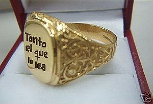

Monte del Destino
 De: La Frikipedia, la enciclopedia extremadamente seria.
De: La Frikipedia, la enciclopedia extremadamente seria.
En el universo de ficción de Capsule Corporation.
Se puede reconocer fácilmente por su singular forma de volcán envuelto en terroríficas llamas y rodeado de negras nubes de gases tóxicos y por los barrios de chabolas construidos en sus laderas y poblados de narcotraficantes orcos.
Historia

aqui tenemos al gicho que todos los bolsos ve (se cree que es el patriarca supremo y el forjador del sello de los sellos)
 Aqui tenemos al gran Sello guardado en su cajita.
Este lugar creado por el patriarca gitano hace millones de años,
antes de que se extinguieran los ultimos afros y de que naciera Manuel Fraga. Por lo tanto ahi se siguen respetando las viejas costumbres gitanas, como la de no hacer nada en todo el dia, ni siquiera robar o follarse primas y primos.
Allí se estableció Sauron, dios y señor de los Orcos y los agentes de borsa, a principios de la Segunda Edad del Sol y allí, hace mucho tiempo, según cuenta la leyenda, cuando los primeros gitanos empezaban sus andaduras roberiles se forjó el Anillo de poder transparente: una joya mas preciada que todas las otras juntas, una que tendría el poder de doblegar a todas las razas, desde los Wombats hasta los Pokemon. Se trataba del sello único. En su lateral rezaba una inscripción:

|
Un sello para robar a todas las razas, el que posea este sello será el rey los Gitanos,ay payo
|

|
|
|
. Aunque no sobrepasaba los mil quinientos metros de altura, este volcán se alzaba solitario dominando la enorme y estéril Meseta de Gorgoroth, en el cruce entre la quinta avenida y Gringots, en la parte norte de Mordor.
Pero mucho antes que eso, fue allí donde Moisés condujo al pueblo Judío una vez abandonaron Egipto y por gracia de Dios le fueron entregados los diez mandamientos cuya primera impresión al verlos fue que parecían haber sido hechos por el hijodeputa retrasado de Wonderwice y antes de bajar los, digamos, retocó. Aunque con el paso de los tiempos, han sido muchos los autores, desde los 4 apóstoles, hasta J. K. Rowling, que han modificado los diez mandamientos hasta llegar a ser lo que son hoy en día. Según una célebre historiadora y arqueóloga, Nico Robin, los posibles Diez Mandamientos que bajó Moisés del monte fueron estos:
- 1) Odiarás a Kira por sobre todas las cosas.
- 2) No tomarás el nombre de sucesor de L en vano.
- 3) Harás fiesta y tanto tu torta de cumpleaños como demas dulces seran solo para L.
- 4) Honrarás a Watari como tu padre, asi como a los dulces, el cafe y el Té.
- 5) No matarás a nadie mas que no sea Kira.
- 6) No cometerás actos impuros a menos que sea por hacer
mierda pagar a Kira.
- 7) No robarás, a menos de que sean dulces para él y/o una Death Note, y claro, la death note para joderle la paciencia a Kira.
- 8) No dirás falsos testimonios ni mentiras, acerca de los casos que resolvio aunque el todos los puede resolver si el quiere.
- 9) No consentirás pensamientos ni deseos impuros hacia L, pero a Light/Kira Si.
- 10)No envidiarás el puesto del sucesor de L.
- 11)No desearás la mujer de L.(si, recientes investigaciones han provado que hubo un 100% de que alla tenido una)
- 12)Amarás a los alimentos altamente en azucares.
- 13)No lo compararás con un pinche emo.
- 14)A donde quiera que vayas ve descalzo.
- 15)No vestirás peor que L.
(Puede que alguien se percate de que en realidad hay 15 mandamientos, pero nunca se debe cuestionar la voluntad de dios, o sino te matará con su Death Note)
Después de la marcha de los judíos, conocida también con nombres como la diáspora, la metástasis, la metamfetamina, la tabla del nueve o el holocausto nazi, en la pequeña región de Mordor se instalaron los gitanos y posteriormente los palestinos, (Sí, esos que salen en las noticias con las cabezas cubiertas con pañuelos negros y blancos y a veces con sangre e incluso a veces cubiertos completamente por una manta blanca y estirados al suelo).
No fue hasta el 2003 que fue repoblada nuevamente con camellos traficantes a buen precio y tias macizorras y ligeritas de ropa para fomentar el turismo, que hasta la fecha había estado un poco decaído.
Gestas importantes
(Ordenadas cronológicamente)
- Dios y el primer hokage, crearon el mundo.
- Orochimaru creó a los americanos.
- Los americanos lanzaron un ataque nuclear contra una población japonesa anónima.
- De los restos se formó el monte del destino.
- Llegaron los judíos.
- Hicieron lo de los mandamientos.
- Se quedaron contentos.
- Tuvieron sus 5 minutos de fama.
- Fueron expulsados de allí.
- Llegaron los gitanos.
- Lo mismo.
- Pero entonces llegó un explorador Orco de nvl.5 con 2 de defensa y 1 de ataque que se invoca con 2 pantanos descubrió el lugar, deshabitado desde lo de los judíos.
- Sauron decidió montarse su chaled allí.
- Sauron, un ojo, construyó una torre inexplicablemente alta y delgada sin la ayuda de ninguna tecnología avanzada de construcción en medio de un inhospito terreno abrupto lleno de roca volcánica y con constantes erupciones de lava y de gas tóxico él solo.
- Desde allí empezó una campaña de terror y maldad solo comparable con la de MacDonald’s y la de Madara Uchiha.
- Fue derrotado fácilmente, como cualquier otro villano, por un power-up de poder de Ichigo Kurosaki.
- El abuelo de Aragorn cuyo nombre era Don Quijote no quiso tirar el anillo al volcán poniendo por excusa que si lo hacía no se podría rodar la trilogía El Señor de los Anillos.
- Un orco fetichista completamente obsesionado por el abuelo de Aragorn le saltó de un árbol intentándolo violar.
- El anillo fue encontrado por un cocainómano llamado Smigol, que en poco tiempo adoptaría la forma de sentarse y de hablar de su ídolo, L, y se convertiría en Gollum de tanto mirar el
puto anillo día y noche.
- Una mujer dio a luz en su cima a un héroe, llamado Peter Griffin.
- Bilbo Bolsón le mangó el anillo a Gollum en un descuido de éste.
- Los Orcos se declararon en vaga y fundaron el PSOE (Partido Sindicalista de Orcos Comunistas)
- Alguien se dio cuenta de que las siglas no concordaban con el nombre del partido.
- A su vez Frodo le mangó el anillo a su tío.
- Obama inauguró allí una estatua en honor a los veteranos de Vietnam.
- El viejo cachondo de la barba blanca cuya verdadera identidad es Howarts, pero que adopta el sobrenombre de Gandalf a secas para que no le puedan matar con una Death Note, pilló a Frodo metieno su
cipote dedo en el anillo y como castigo le robó su virginidad.
- Una vez hecho eso, le encargó la misión suicidad que él no quería hacer de llevar el anillo hasta el vater del monte del destino y lanzaro allí.
- Sam.
- El anillo cayó a la lava junto a Gollum
- Peter Griffin lanzó en un ataque de furia premeditada a su “hija” Meg Griffin a la lava
- Meg Griffin quedó paralítica al pegarse una hostia con el suelo vacío del volcán, que se había secado debido a la falta de lluvias de lava.
- El alcalde de Marbella lo adquirió para hacer complejos hotelarios u hotelísticos de una hortera y pesima calidad pero con unas incoherentes 5 estrellas. (L está trabajando en el caso)
Sabías que...
- ...cuándo vas al Monte del destino y no te roban nada es porque eres uno de ellos?
- ...los gitanos antes eran buenos pero se corrompieron con la mirada del gran ojo?
- ...George Lucas es el director de Star Wars?
- ...en el poblado gitano puedes conseguir móviles 3g de segunda mano por menos de 1000 pesetas?
- ...esos moviles no son robados?
- ...hace 1500 años que se inventó aqui la bolsa de plastico que tan util nos es hoy en dia para fabricar poblados?
- ...los emos son gays, no es que tenga queber pero !SON GAYS¡
Autor(es):
- Roms
- Bazuke
- Majinkev
- Manu1236
- Calico
- Catacras
- Covarde aninimo
- Betsy 3.77
- Gui
- Gavilan pollero
Frikipedia 2005-2016, Licencia
GFDL 1.2 - Extraído por FrikiLeaks